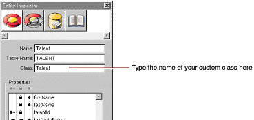

| PATH |

Right now, the Movies application maps all its entities to the EOGenericRecord class. As the preceding sections illustrate, you can go quite far in an application using just this default enterprise object class, but now you need to add some custom classes to the Movies application.
In this section, you'll learn how to:
You'll create custom classes for the Talent and MovieRole
entities. In the Talent class, you'll write a fullName method
that concatenates a Talent's first and last names. You'll use the
method to populate MovieDetail's browser element. In the MovieRole
class, you'll provide default values for newly inserted MovieRoles
so they don't show up in the list of movie roles as a blank line.
Unless you specify otherwise, EOModeler maps entities to the EOGenericRecord class. When you want to use a custom class instead, you need to specify that custom class in the model.

Now you can generate the source files for your Talent and MovieRole classes.
You can easily create a custom class to hold your business logic: EOModeler provides a command to generate enterprise object classes.
A Choose Class
Name panel opens. If you opened the model file from Project Builder, the
Choose Class Name panel displays the project as the destination
directory and Talent.java as
the default filename.
A panel opens, asking if you want to insert the file in your project.
EOModeler creates the source file Talent.java and
adds it to your project.
Now add the fullName method
to Talent and bind it to the browser.
Talent.java in
Project Builder.The class file and implements set and get
methods for all of Talent's class properties (firstName and lastName).
fullName,
as follows. public String fullName(){
return firstName() + " " + lastName();
}After
you save, fullName appears
in the object browser of WebObjects Builder as a property of Talent.
talent.fullName to
the browser's displayString attribute
and unbind the value attribute.As discussed in "Specifying Default Values for New Enterprise Objects", there are two main ways to specify default values for new enterprise objects without making explicit assignments:
For the Movie class, you specified default values using a display group. This approach is also the more appropriate choice for the MovieRole class, but you'll use the other approach for MovieRole just to see how its done.
MovieRole.java in
Project Builder.awakeFromInsertionInEditingContext,
as follows public void awakeFromInsertion(EOEditingContext context){
super.awakeFromInsertion(context);
setRoleName("New Role");
}This method is automatically invoked right after your enterprise object class creates a new MovieRole and inserts it into an editing context, which happens when you use a display group to insert.
Be sure that all your project's files are saved (including your model file), and build and run your application. Now when a user clicks the Insert/New button on the MovieDetails page, a new MovieRole is inserted, with "New Role" already displayed as the role name.
© 2001 Apple Computer, Inc.